Extensions-methods on IEnumerable
LINQ offers you many important higher order functions to transform IEnumerables in many ways.
Funcky offers a few additional ones which can come in handy.
AdjacentGroupBy

AverageOrNone
CartesianProduct
In mathematics, specifically set theory, the Cartesian product of two sets A and B, denoted A×B, is the set of all ordered pairs (a, b) where a is in A and b is in B.
The CartesianProduct extension function returns all possible pairs of two given IEnumerables.
There are two overloads, one which lets you choose
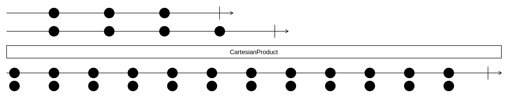
Examples
Two sequences as input:
smiles = [😀, 😐, 🙄]
fruits = [🍉, 🍌, 🍇, 🍓]
The cartesian products of smiles and fruits:
smiles × fruits => [[😀, 🍉], [😀, 🍌], [😀, 🍇], [😀, 🍓],
[😐, 🍉], [😐, 🍌], [😐, 🍇], [😐, 🍓],
[🙄, 🍉], [🙄, 🍌], [🙄, 🍇], [🙄, 🍓]]
In this C# example you see how all Playing cards are in fact a cartesian product of a suit and a value.
This example uses the overload with our own selector, because we just want a sequence of strings.
var suits = ImmutableList.Create("♠", "♣", "♥", "♦");
var values =
ImmutableList.Create("2", "3", "4", "5", "6", "7", "8", "9", "T", "J", "Q", "K", "A");
var allCards = suits.CartesianProduct(values, (suit, value) => $"{value}{suit}");
Chunk
With the .Chunk(int) extension method, you can turn an IEnumerable<T> into a IEnumerable<IEnumerable<T>>, with the inner Enumerables being of the given size.
Empty and negative chunk sizes are not allowed and will throw a ArgumentOutOfRangeException.
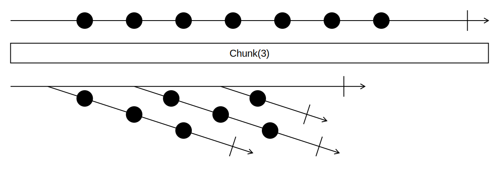
Examples
var numbers = new List<int> { 1, 2, 3, 4, 5, 6, 7, 8, 9 };
var chunked = numbers.Chunk(3);
// Result: IEnumerable with Chunks of size 3:
// 1st Chunk: 1, 2, 3
// 2nd Chunk: 4, 5, 6
// 3rd Chunk: 7, 8, 9
When the last chunk isn't complete, we get a smaller, incomplete last chunk:
var numbers = new List<int> { 1, 2, 3, 4, 5, 6, 7 };
var chunked = numbers.Chunk(4);
// Result: IEnumerable with Chunks of size 4:
// 1st Chunk: 1, 2, 3, 4
// 2nd Chunk: 5, 6, 7
If required, you can also pass a result selector, that turns the inner IEnumerables into a different type:
var magicSquare = new List<int> { 4, 9, 2, 3, 5, 7, 8, 1, 6 };
var result = magicSquare.Chunk(3, Enumerable.Average); // equivalent to magicSquare.Chunk(3, number => Enumerable.Average(number));
// Result: IEnumerable<int> with 5, 5, 5 as items
ForEach
With the .ForEach extension method, you can invoke an action for each item in an enumerable, just like a foreach statement would allow you to do.
This method is already available in .NET, but just on Lists, and it makes sense for it to be available on every enumerable.
Keep in mind that .ForEach is imperative and only expects an Action<T>. It should not be used to change state of anything outside of the .ForEach.
If you want to combine the enumerable into a result, consider using .Aggregate(), as that is designed for such use-cases.
Example
// Original
foreach (var item in Items)
{
DoSomething(item);
}
// Using `.ForEach`
Items.ForEach(DoSomething); // equivalent to Items.ForEach(item => DoSomething(item));
FirstOrNone
Inspect
With the .Inspect extension method, you can invoke an action for each item in an enumerable,
just like .ForEach or the foreach statement would allow you to do, but the method yields the initial enumerable back.
This can be useful when you want to apply a side-effect to a list before returning, or continue selecting on a list after applying a side-effect.
Inspect can be especially useful when you want to log step(s) of a complex query, since you don't have to change the structure of the code to use it.
Examples
// Original using .ForEach
var items = someList.Select(TransformSomething);
Items.ForEach(DoSomething);
return items;
// Using `.Inspect`
return someList.Select(TransformSomething).Inspect(DoSomething);
// Original using foreach
var items = someList.Select(TransformToSomething);
foreach (var item in items)
{
DoSomething(item);
}
var transformedItems = items.Select(TransformToSomethingElse);
// Using `.Inspect`
var transformedItems = someList
.Select(TransformSomething)
.Inspect(DoSomething)
.Select(TransformToSomethingElse);
Deferred Execution
It is important to understand at which moment .Inspect is executed. The exact moment of execution is the same as if it were a Select, Where or any other deferred LINQ-method.
See Microsoft Docs for more information about deferred execution in LINQ.
This is also an important difference between .ForEach (eager) and .Inspect (deferred).
Consider the following example:
Enumerable.Range(1, 100)
.Inspect(n => Console.WriteLine($"before where: {n}"))
.Where(n => n % 2 == 0)
.Inspect(n => Console.WriteLine($"after where: {n}"))
.Inspect(Console.WriteLine)
.Take(2)
.ToImmutableList(); // <- Side effects of .Inspect happen here
// Prints:
// before where: 1
// before where: 2
// after where: 2
// 2
// before where: 3
// before where: 4
// after where: 4
// 4
Interleave
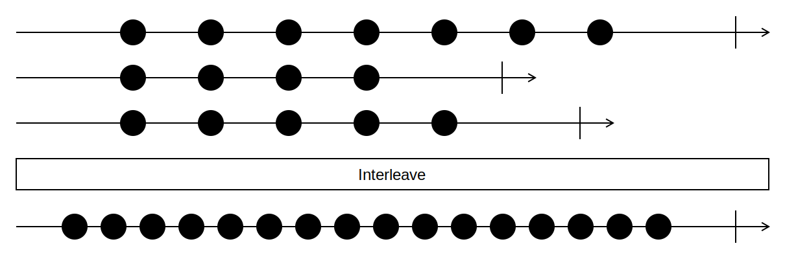
Intersperse
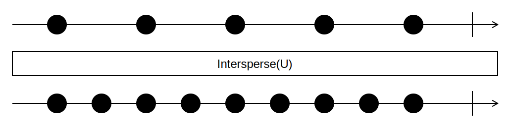
Materialize
Merge

Examples
Given two sequences which are already ordered the same way:
sequence1 = [1, 2, 7, 9, 14]
sequence2 = [3, 6, 8, 11, 12, 16]
By merging we get one single sequence with the all elements of the given sequences with the same order.
sequence1.Merge(sequence2) =>
[1, 2, 7, 9, 14 ]
[ 3, 6, 8, 11, 12, 16]
-------------------------------------
[1, 2, 3, 6, 7, 8, 9, 11, 12, 14, 16]
None
With the .None extension method, you can make !enumerable.Any() calls easier.
That's all there is. You can replace:
if (!enumerable.Any()) { ... }
with the easier to read
if (enumerable.None()) { ... }
Just like with .Any(), you can additionally pass a predicate as a parameter:
if (enumerable.None(item => item.SomeNumericProperty == 2) { ... }
PairWise

Example
animals = [ 🐵, 🐶, 🐺, 🐱, 🦄, 🐷, 🦁]
animals.PairWise() =>
[[🐵, 🐶],
[🐶, 🐺],
[🐺, 🐱],
[🐱, 🦄],
[🦄, 🐷],
[🐷, 🦁]]
Partition
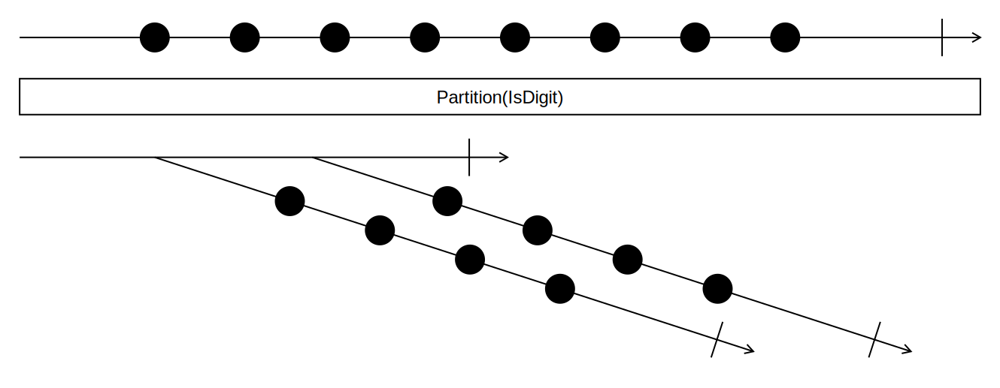
Example
plantBasedFood = [🍉, 🩠, ğŸ‚, 🍌, ğŸ«, 🍓, 🍒, 🥕, 🌽, 🥧 ]
plantBasedFood.Partition(IsProcessedFood?)
=> [[🩠, ğŸ‚, ğŸ«, 🥧],
[🍉, 🍌, 🍓, 🍒, 🥕, 🌽]]
PowerSet
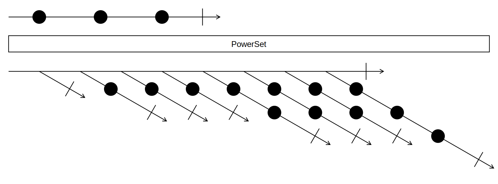
Shuffle
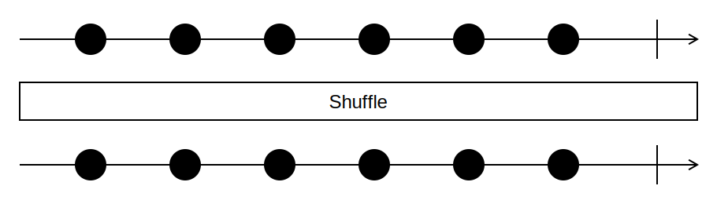
SlidingWindow

Split

TakeEvery

Transpose

WhereNotNull
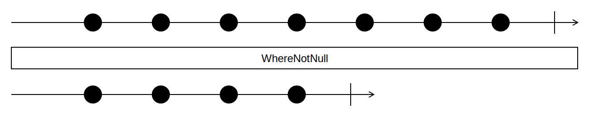
WhereSelect

WithFirst
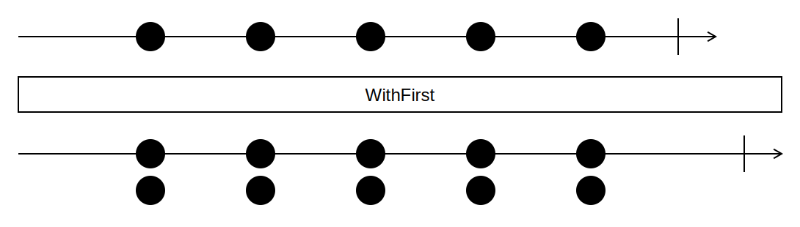
WithIndex

WithLast

WithPrevious
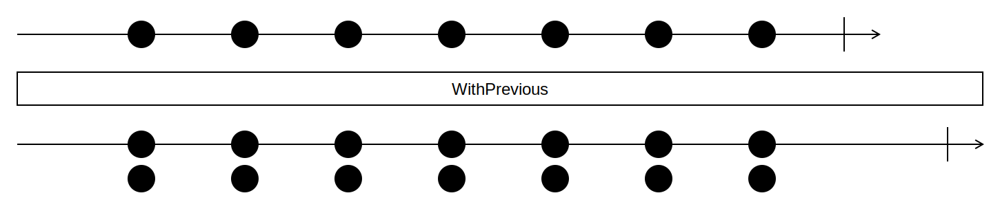
Example
animals = [ 🦄, 🐺, 🐷, 🦁, 🐵, 🶠]
animals.WithPrevious() =>
[[∅, 🦄],
[🦄, 🐺],
[🐺, 🐷],
[🐷, 🦁],
[🦁, 🐵],
[🐵, 🐶]]
ZipLongest
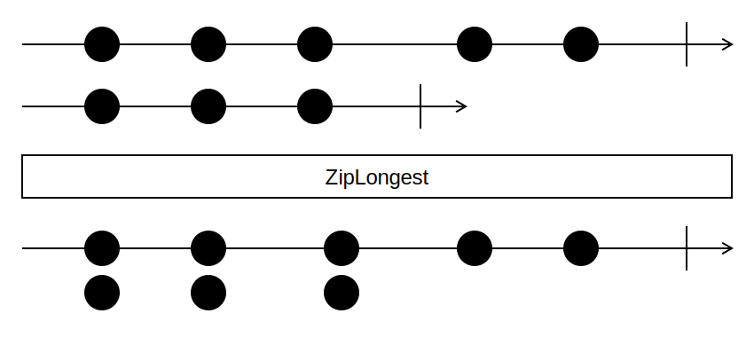